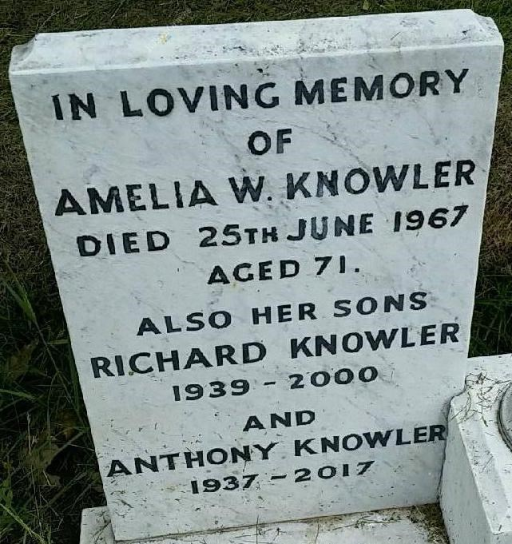
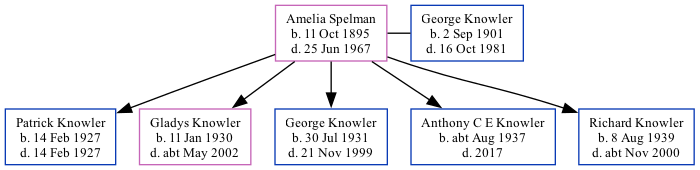

Amelia Winifred Knowler (née Spelman) 1895 - 1967 [ Home ] | [ Calendar ] | [ Surnames Index ] | [ Family History ]Amelia Spelman , the wife of George Thomas Knowler (the first cousin twice-removed on the mother's side of Nigel Horne ), was born in Ramsgate, Kent, England on Oct 11, 18951,2,3,4,5,6 and married George (a farm horseman with whom she had 5 children: Patrick , Gladys Kathleen M , George Thomas Patrick , Anthony C E and Richard Henry J ) in Birchington, Kent, England on Oct 3, 19258 (Our Lady and St Benedict).
Throughout her life, she lived at her birthplace in 19011 ; and on 36 Chapel Road, St Lawrence, Thanet, Kent on Apr 2, 19112 .
She died on Jun 25, 1967 in Dover, Kent, England4,5,7 and was buried on Hamilton Road Cemetery, 45 Hamilton Road, Deal, Kent c. 19679 .
Children Patrick was born on Feb 14, 1927Gladys Kathleen M was born on Jan 11, 1930George Thomas Patrick was born on Jul 30, 1931Anthony C E was born c. Aug 1937Richard Henry J was born on Aug 8, 1939Citations 1901 England Census Online publication - Provo, UT, USA: The Generations Network, Inc., 2005.Original data - Census Returns of England and Wales, 1901. Kew, Surrey, England: The National Archives of the UK (TNA): Public Record Office (PRO), 1901. Data imaged from the National (Relation to Head of House: Daughter) 1911 England Census Online publication - Provo, UT, USA: Ancestry.com Operations, Inc., 2011.Original data - Census Returns of England and Wales, 1911. Kew, Surrey, England: The National Archives of the UK (TNA), 1911. Data imaged from the National Archives, London, England. (Marital Status: Single; Relation to Head of House: Daughter) England & Wales births 1837-2006 - Findmypast England & Wales deaths 1837-2007 - Findmypast England & Wales, Death Index: 1984-2005 Online publication - Provo, UT, USA: The Generations Network, Inc., 2007.Original data - General Register Office. England and Wales Civil Registration Indexes. London, England: General Register Office. © Crown copyright. Published by permission of the Cont England & Wales, FreeBMD Birth Index, 1837-1915 Online publication - Provo, UT, USA: The Generations Network, Inc., 2006.Original data - General Register Office. England and Wales Civil Registration Indexes. London, England: General Register Office. © Crown copyright. Published by permission of the Cont England Billion Graves cemetery index - Findmypast England & Wales, Marriage Index: 1916-2005 Online publication - Provo, UT, USA: The Generations Network, Inc., 2009.Original data - General Register Office. England and Wales Civil Registration Indexes. London, England: General Register Office. © Crown copyright. Published by permission of the Cont https://billiongraves.com/grave/Anthony-Knowler/27756852 Media Anthony Knowler - headstone  England & Wales births 1837-2006 Transcription - BMD-B-1895-4-AZ-000519-003 1911 England, Wales & Scotland Census Transcription - GBC-1911-RG14-04528-0261-3 England & Wales marriages 1837-2008 Transcription - BMD-M-1925-4-AZ-001082-065 1939 Register Transcription - TNA-R39-1707-1707A-021-38 England & Wales deaths 1837-2007 Transcription - BMD-D-1967-2-AZ-000534-062 England Billion Graves cemetery index - US/BMD/BILLION/5/000027756850 Family Tree Map
Generated by ged2site . Last updated on Feb 28, 2025